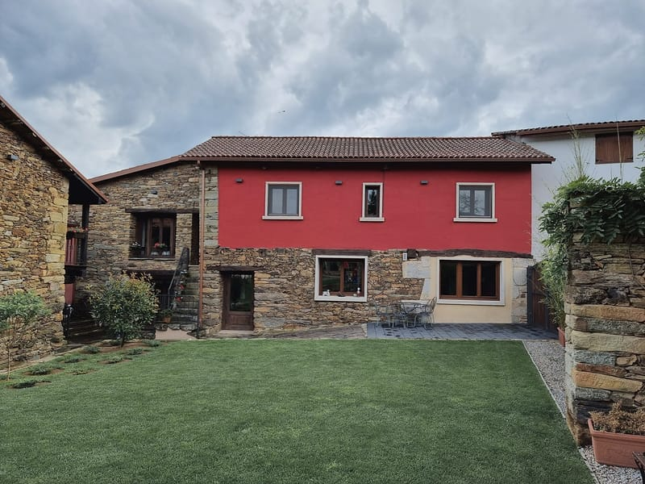
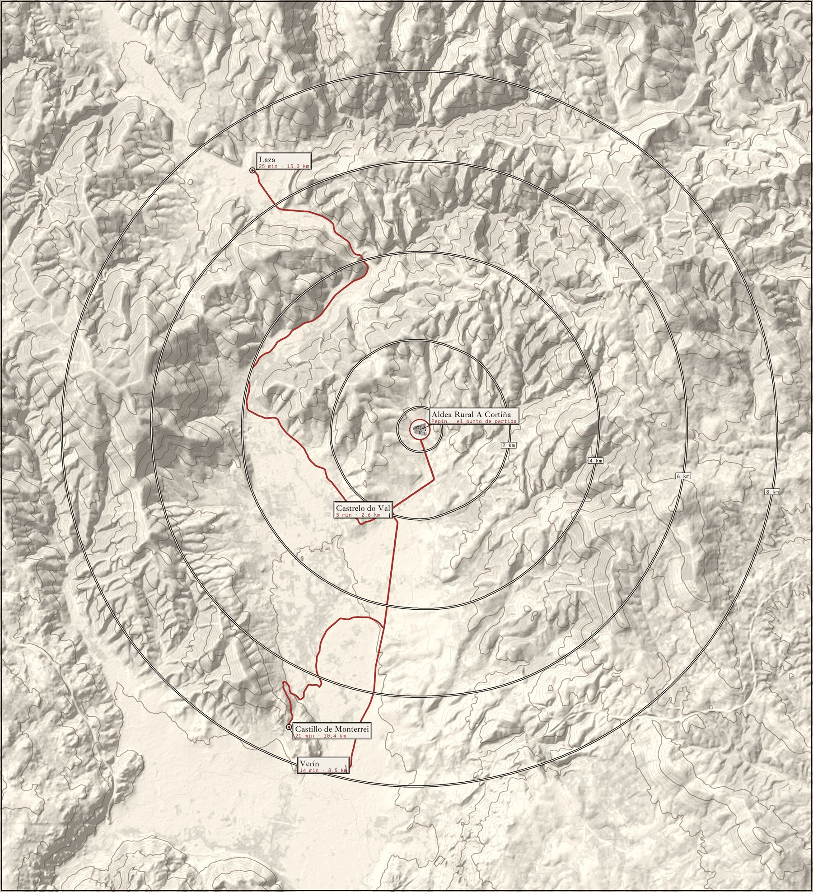

La casa
3 dormitorios con baño · uno adaptado en planta baja · hasta 6 (+1 supletoria)
Salón-cocina en la planta baja y dormitorios repartidos entre las dos plantas.
Elegir esta llave
Aldea rural · Pepín, Castrelo do Val (Ourense)
Casa para seis y dos apartamentos · piscina en verano · a 8 km de Verín
La cortiña
cortiña gallego
En gallego, la cortiña es la finca cerrada junto a la casa.
Esta es una aldea pequeña dentro de la aldea de Pepín, en el concello de Castrelo do Val: una casa y dos apartamentos de piedra y almagre (el almagre es el rojo de tierra, de óxido de hierro, con el que se tiñen las fachadas), un cenador con barbacoa, una piscina ovalada que mira al prado y al bosque, una sala de juegos y césped para correr.
Su logo es el dibujo a plumilla de una solaina: la galería de madera, de dos alturas, que se apoya en un muro de piedra.
1casa
2apartamentos
5dormitorios, cada uno con baño
10 + 3plazas y supletorias por confirmar
jul · agola piscina abre
8,5 kmhasta Verín
| Unidades | La casa y dos apartamentos (apartamento 1 en la planta baja, apartamento 2 en la planta alta); también se puede alquilar la aldea entera |
|---|---|
| Dormitorios y camas | 5 dormitorios. Casa: uno con cama de matrimonio en la planta baja, otro con cama de matrimonio y otro con dos camas individuales en la planta alta. Cada apartamento: un dormitorio con cama de matrimonio |
| Baños | 5, uno en cada dormitorio |
| Adaptado | Un dormitorio de la casa, en la planta baja, adaptado para personas con movilidad reducida |
| Plazas | 10, y 3 con camas supletorias o sofá cama por confirmar: casa 6 (+1), apartamento 1: 2 (+1), apartamento 2: 2 (+ sofá cama) |
| Piscina | Al aire libre, ovalada, solo en julio y agosto |
| Sala de juegos | Billar, futbolín y ping-pong |
| Mascotas | No se admiten |
| Horarios | Entrada de 16:00 a 20:00; salida antes de las 12:00 |
| Distancias | Castrelo do Val, 2,6 km · Verín, 8,5 km · Castillo de Monterrei, 10,4 km · Laza, 15,3 km · Chaves, 36,2 km · Ourense, 77,3 km |
Los alojamientos
Una casa y dos apartamentos, y alrededor, la piscina, el cenador, la sala de juegos y el césped.
3 dormitorios con baño · uno adaptado en planta baja · hasta 6 (+1 supletoria)
Salón-cocina en la planta baja y dormitorios repartidos entre las dos plantas.
Elegir esta llavePlanta baja · 1 dormitorio con baño · 2 (+1 supletoria)
Salón-cocina con muro de granito y suelo de barro.
Elegir esta llavePlanta alta · 1 dormitorio con baño · 2 (+ sofá cama)
Salón-cocina con muro de granito y sofá de cuero.
Elegir esta llavePor dentro
Cada dormitorio tiene su baño privado. Elige una llave para ver sus habitaciones.
3 dormitorios con baño · hasta 6 (+1 supletoria por confirmar)
Según su web y las fichas de los portales.
Elegir esta llavePlanta baja · 1 dormitorio con baño · 2 (+1 supletoria por confirmar)
Según su web y las fichas de los portales.
Elegir esta llavePlanta alta · 1 dormitorio con baño · 2 (+ sofá cama por confirmar)
Según su web y las fichas de los portales.
Elegir esta llaveFuera
Lo que hay entre los edificios: una piscina que mira al bosque, un cenador rojo con barbacoa, una sala de juegos para los días de lluvia y césped hasta donde empiezan las casas de Pepín.
Al aire libre, ovalada, con las tumbonas en el borde y delante el prado y el bosque.
Abre solo en julio y agosto
la piscina es fantástica
Un pabellón rojo con columnas de granito y placas solares en el tejado. Debajo, mesas de madera y la zona de barbacoa; desde allí se ve la aldea.
Delante, el camino de losas y el césped, con la casita infantil.
Billar, futbolín y ping-pong, con muros de piedra y una entreplanta con barandilla. Hay también mesas infantiles.
La barra

Alrededor
Castrelo do Val, a 5 minutos; Verín, a 14; el castillo de Monterrei, a 21, y Laza, a 25. Minutos en coche, calculados con OpenStreetMap.

Relieve y ortofoto: Instituto Geográfico Nacional (CC BY 4.0). Rutas: OpenStreetMap.
Cuándo venir
Febrero
El primer sábado de febrero se celebra en Castrelo do Val el Sábado Maragato (en 2026 fue el 7 de febrero; la fecha de 2027, por confirmar). El Maragato es una máscara local recuperada que encabeza el desfile con el Rey de Castrelo, las Madamas y los Chambergos. Cerca, el Entroido de Verín, con sus cigarróns, y el de Laza, con sus peliqueiros: la máscara de cada pueblo.
Primavera
El Támega cruza el sur del concello y hay rutas a pie por el monte.
Verano
La piscina de la aldea abre en julio y agosto. En verano hay también una zona de baño en el regato de Pepín.
Otoño
La vendimia de la D.O. Monterrei, el vino de la comarca, y el castillo de Monterrei, a 10 km.
Lo que dicen
4,6en Google 216 opiniones
9,5en Booking 66 opiniones
«Impresionante para quien quiera disfrutar de la naturaleza y desconectar»
Lo que más repiten
sitio tranquilo
recién reformado
la piscina es fantástica
buena gente
Etiquetas de las opiniones de Booking, vistas en Kayak
Reservar
La casa, un apartamento o la aldea entera: cada una abre una puerta distinta. Elige la llave, las noches y cuántos venís. Si lo prefieres, llama al 645 263 522 o al 988 41 92 15, o escribe a a.p.pepin@hotmail.com.
Demostración. Así funcionará la reserva directa: las noches ocupadas son de ejemplo, los precios son supuestos y no se envía, se guarda ni se cobra nada.
Cómo llegar
Pepín es una aldea del concello de Castrelo do Val, en la comarca de Verín (Monterrei). Los apartamentos y la casa están en el borde norte, con prados y monte hacia el este. Distancias por carretera, calculadas sobre OpenStreetMap.